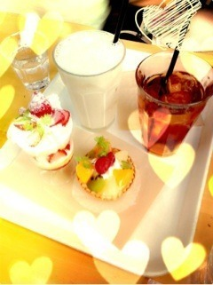

| 2013/02 09 Sat | 撮影やで！(´>∀<｀)ゝ |
ちはるーむへようこそ(>ω<)！
まず...
２月６日＊みなみ
２月８日＊かずみん
Happy Birthday♡
みなみはなんかね、ほんとに女の子って感じ！
みなみできない～と言ってながらも
やってみれば淡々とやりこなす天才だと思う( ^ω^ )！
このまんまのみなみでいてね♡大好き

かずみんはね、ほんっとに面白い(´Д` )♡
優しいし面白いし一緒にいて楽しい！
でもね、かずみんと一緒にいると
かずみんの引き笑いの笑い方と声が似てしまう。笑
んまあそんなかずみんが大好き
これからもよろしくね(｢･ω･)｢！！

昨日、今日とみんなで撮影してますヽ(^ω^)ﾉ
朝が早かったり
外がめっちゃ寒かったり
いろいろするけど笑
みんなでひとつのいいもの作ろうって頑張ってます！！！
いつもと違う雰囲気でわちゃわちゃしてて楽しいよ

愛未と一緒に何かとやらかしてるのでよかったら見て欲しいですね(｢･ω･)｢はい。笑
そしてそして！
幸奈が戻ってきたので(o^^o)
アンダー陣の勢力も益々パワーアップしていくと思います
 ふふ
ふふ
ふふ
昨日久しぶりに幸奈がはしゃいでるのを見て
可愛くてなんか嬉しくなっちゃったよ(＊･ω･＊)
頑張ろね！！
ずっと前からおしゃれなカフェに行ってみたくて
やっと願い叶った！！

めっちゃおしゃれ！！
おいしかったよー

大人の仲間入りしちゃった気分だったよー( ^ω^ )
こーやってちょっとずつ大人になって行くのかな？(´･ω･`)笑
仲間入りしていくのかな？(´･ω･`)
ちょっと寂しいけど、ちょっと嬉しい。
複雑ーーー( ；∀；)
じゃっ
今日も頑張ってくるぜ( ^ω^ )！！
誕生日だったかずみんと♡
ばいるんっ
るんるんっ
ちはるんっ
(´>∀<｀)ゝ
コメント(114)
2013/02/09 11:12